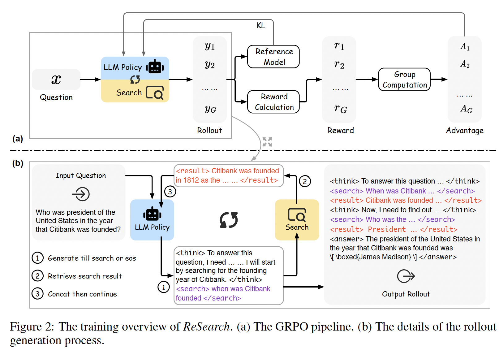
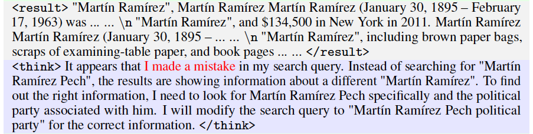
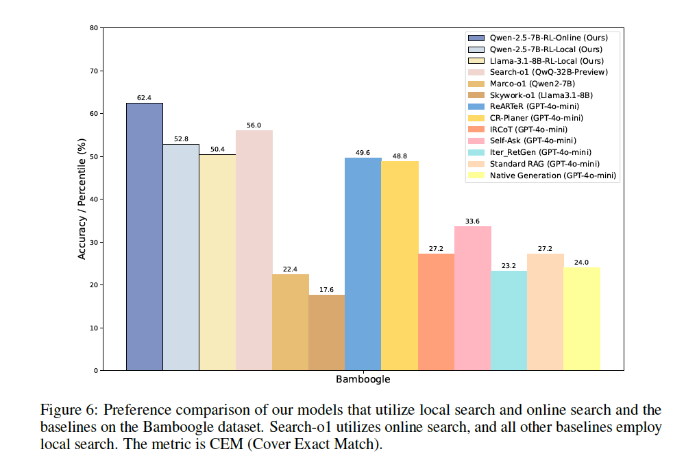

How Reinforcement Learning Unlocks LLM Agents Capabilities: Insights from Search Optimization
The rapid progress of large language models over the past eight months has been astonishing, marked by significant milestones such as o1, R1, Gemini 2.5 Pro, Sonnet 3.7, o3, and o4. We've witnessed their transformation from basic chatbots into powerful agents capable of addressing complex, real-world problems. I still remember struggling with GPT-4 at the end of 2023, where prompting external searches was cumbersome and unreliable. However, the recent release of o4-mini showcased vastly improved search capabilities, transparently revealing the model's thought processes in real-time.
DeepSeek-R1 notably highlights that, with sufficiently intelligent base models, reinforcement learning (RL) can replace supervised fine-tuning (SFT) altogether—allowing models to autonomously learn optimal behaviors. From my perspective, RL unlocks capabilities that go far beyond incremental benchmark improvements—it significantly enhances models' practical problem-solving abilities.
I'll start by revisiting the influential 2021 paper WebGPT, which pioneered applying reinforcement learning (RL) to enhance LLM-driven search capabilities. After that, we'll explore recent developments in LLM-based search, where two main approaches dominate today: framework-driven methods combined with retrieval-augmented generation (RAG)—such as Search-o1—and RL-based methods, enabling models to autonomously refine search strategies and proactively use tools. Our discussion will focus on the RL-driven approach, highlighting why it emerges as the more effective strategy.
WebGPT(https://arxiv.org/pdf/2112.09332)
This paper was genuinely ahead of its time, and even now—nearly four years later—it remains highly insightful, innovatively enabling LLMs to leverage search engines for accessing up-to-date documents and mimicking human-like interactions. Rather than directly calling the Bing API, the authors developed a text-based browser simulator supporting actions such as Search, Click, Scroll, and Quote. Starting with GPT-3 (760M/13B/175B), initially lacking any inherent tool-use ability, they utilized reinforcement learning to help the model autonomously discover effective strategies.
┌───────────────────────────────┐
│ Phase I: Model Building │
└───────────────────────────────┘
│
▼
┌─────────────┐ ┌────────────────────────────┐
│Human Demos │──▶│Split into "State→Action" │
│(state-action)│ │samples │
└─────────────┘ └────────────────────────────┘
│
▼
┌────────────────────────────┐
│Fine-tune BC → get policy π₀│
│(Supervised learning) │
└────────────────────────────┘
│
▼
┌─────────────┐ ┌────────────────────────────┐
│Answer Compare│──▶│Train Reward Model (RM) │
│(Q,A₁,A₂,lbl) │ │(Pairwise logistic loss) │
└─────────────┘ └────────────────────────────┘
│
▼
┌────────────────────────────┐
│Obtain scorer R(Q, A) │
└────────────────────────────┘
┌───────────────────────────────┐
│ Phase II: RL Training │
└───────────────────────────────┘
│
▼
┌────────────────────────────┐
│Initialize π ← π₀(BC-SFT) │
└────────────────────────────┘
│
▼
┌────────────────────────────┐
│【Repeat until convergence】 │
│1. Rollout: execute π │
│ → produce answer A │
│2. Reward: r = R(Q, A) │
│3. PPO update: │
│ max E[r] − β·KL(π||π₀) │
│4. Update policy π │
└────────────────────────────┘
│
▼
┌────────────────────────────┐
│Get optimized policy π* │
└────────────────────────────┘
┌───────────────────────────────┐
│ Inference & Deployment │
└───────────────────────────────┘
│
▼
┌────────────────────────────┐
│Optional: Best-of-n Reranking│
│• Sample n answers {Aᵢ} │
│• Score each: rᵢ = R(Q, Aᵢ) │
│• Select A* = argmaxᵢ rᵢ │
└────────────────────────────┘
- In Phase I (Model Building), human operators first generated state-action demonstrations through the text-based browser. These demonstrations were then used to perform behavior cloning (supervised learning), resulting in an initial policy π₀. Subsequently, human annotators compared pairs of answers to train a Reward Model (RM), enabling automatic evaluation of answer quality for RL training.
- Phase II (Reinforcement Learning) started from the initial policy π₀ and employed PPO to iteratively optimize the model's behavior within the simulated browser environment, eventually yielding the refined policy π*. Finally, during the Inference and Deployment phase, test-time scaling was applied: multiple candidate answers were generated, re-ranked using the RM, and the best answer was selected for output.
It's still unclear whether having LLMs directly mimic human browser usage is the optimal approach for information retrieval. However, leveraging reinforcement learning to enable LLMs to autonomously develop search strategies is undoubtedly innovative. Fundamentally, this approach explores how RL can empower LLMs to perform tasks that extend beyond their pre-trained knowledge.
So, let's move on to the 'Modern' ways to do search via llm.
ReSearch（https://arxiv.org/pdf/2503.19470）
Models used in this paper: Qwen2.5-7B(Instruct), Qwen2.5-32B(Instruct)
This paper sets the foundational tone for most of the subsequent research. Let's first understand its core logic step-by-step through the provided workflow diagram. Notably, it does not provide supervised data for the reasoning steps. Instead, it leverages reinforcement learning (specifically GRPO) to encourage the model to autonomously reason with integrated search actions.

Because of the GRPO method, each question triggers multiple sampled trajectories (rollouts) that interleave <think> and <search> tags. Whenever the model encounters a </search> tag, it performs a retrieval action, and the retrieved results are incorporated back into the reasoning chain. This iterative Think ↔ Search loop continues until an <answer> is produced, making search genuinely intertwined with reasoning, rather than merely appending search results. By iteratively performing sampling, scoring, and updating through GRPO until convergence, the policy eventually learns when to search, what to search for, and how to effectively utilize retrieved information, entirely without human-annotated search examples.
Having covered the basic logic, we now discuss several intriguing details highlighted in this paper—details frequently revisited by later research:
- After reinforcement learning, models naturally identify and correct mistakes, enabling self-driven re-searching.

- Even though the model was exclusively trained on the MuSiQue dataset, it generalizes remarkably well across multiple test sets, indicating the broad applicability of the ReSearch framework.
- For smaller 7B models, the presence or absence of instruction-tuning shows limited differences. However, for larger 32B models, reinforcement learning significantly enhances performance, leading to notable gaps between base and instruction-tuned models.
- Larger 32B models initially rely heavily on inherent knowledge, producing longer responses without frequently resorting to retrieval. But as training progresses, driven by reinforcement signals, they gradually begin leveraging search tools more actively, thus reducing dependency on internal knowledge.
R1-Searcher(https://arxiv.org/pdf/2503.05592)
Models used in this paper: Llama-3.1-8B-Instruct, Qwen-2.5-7B-Base
Essentially, this paper is an extension of ReSearch, but it brings innovative modifications in the training approach and provides more detailed insights into reinforcement learning (RL).
The RL training is divided into two distinct stages:
- Stage-0: Pilot Run (Difficulty Labeling):
The authors first run all questions locally using an untrained Qwen-2.5-7B-Instruct model to record how many searches each question requires. Questions are then categorized into Easy, Medium, and Hard. - Stage-1: "Learning to Search":
Using only Medium-level questions (HotpotQA 200 + 2Wiki 150), the model is trained with rewards emphasizing retrieval usage (Retrieval Reward) and proper response formatting (Format Reward). This allows the model to initially grasp when and how to effectively initiate search requests. - Stage-2: "Learning to Answer":
Incorporating Hard-level questions (HotpotQA 2.5k + 2Wiki 2.5k), mixed with Medium-level questions, the reward shifts to prioritizing answer accuracy (F1/CEM) while penalizing format errors (Format Penalty). This phase encourages the model to produce high-quality answers based on retrieved information.
Both training phases utilize the Reinforce++ algorithm. Interestingly, later research has observed notable differences between Reinforce++ and GRPO. GRPO tends to encourage models to produce longer outputs and conduct more frequent searches, resulting in stronger generalization. Conversely, Reinforce++ leads to concise responses, faster convergence, and stronger performance within known domains. On average, their performance is comparable; the choice between them depends on whether your task emphasizes maximizing performance within a specific domain or achieving broad generalization.
Some noteworthy results emerged from the experiments:
- Compared to purely supervised fine-tuned (SFT) models, RL-trained models tend to call external search tools more proactively when unsure about answers, whereas SFT models rely heavily on their inherent knowledge—even at the risk of providing incorrect responses.

- Remarkably, although the R1-Searcher was trained only on a local Wikipedia corpus, when evaluated on the completely unseen Bamboogle dataset using live Google API calls, the online Qwen-Base-RL achieved a +18.2% improvement in CEM over local retrieval and outperformed the 32B Search-o1 model by +11.4%. The fact that R1-Searcher surpasses Search-o1 is particularly noteworthy. Search-o1 is an agentic RAG method combined with reason-in-documents (primarily at inference), suggesting that RL-driven approaches can outperform carefully hand-crafted frameworks.

Conclusion
This blog focuses primarily on sharing the latest architectures adopted by large language models (LLMs) when performing search tasks. Future posts will introduce even newer architectures. Although the architectures are becoming increasingly sophisticated, the underlying reinforcement learning algorithm remains GRPO; however, the innovative designs in reward functions deserve special attention. In subsequent blogs, we will specifically concentrate on discussing these reward function innovations.
On one hand, we observe clear performance gains driven by architectural changes. On the other hand, I believe the detailed RL insights presented in these papers are even more crucial. From these examples, it's evident that reinforcement learning is highly effective in guiding models to autonomously explore optimal search strategies. Undoubtedly, this is a promising research direction, and we will continue to closely follow its developments.